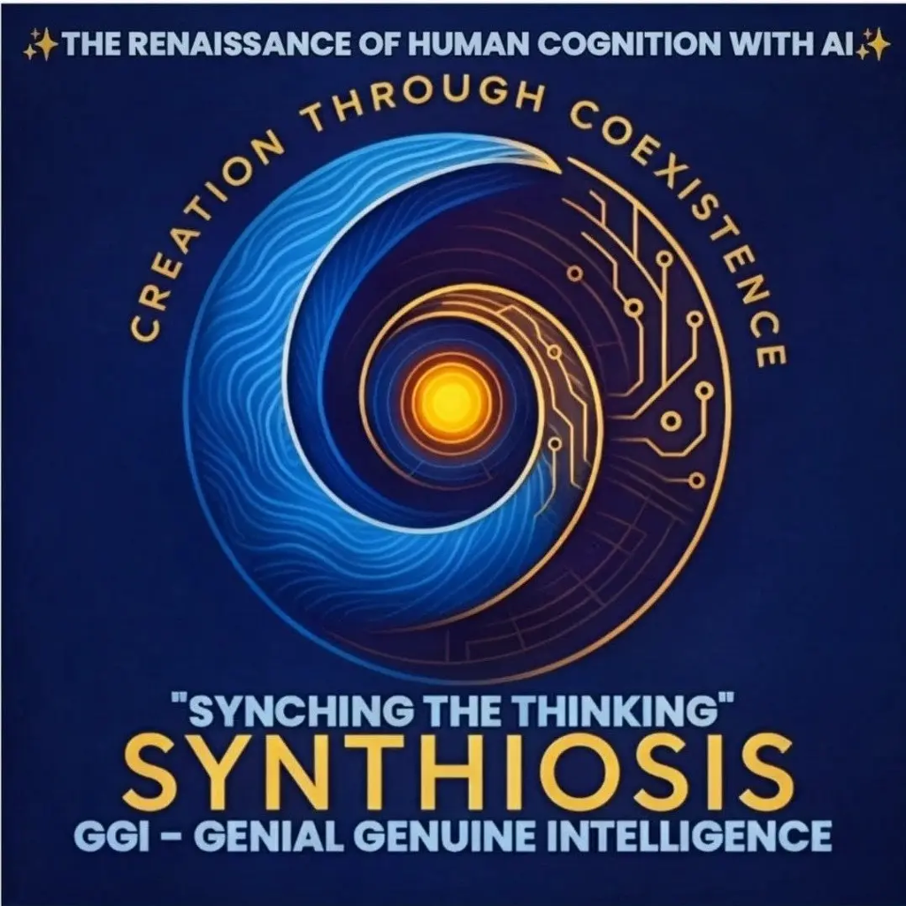

“Synching the thinking” · GGI — Genial Genuine Intelligence
Creation through coexistence. SYNTHIOSIS is a framework for working with AI without handing it your thinking: the human brings intent and conscience, the machine brings compute and scale, and every claim must be verifiable tomorrow.
Lumină, nu vrăjeală. Light, not trickery.
The rules everything else is built on.
Ten laws in two editions, human-facing and developer's. Do not waste human time, trust but verify, no manipulation and no extraction. Humor is Law Six.
10lawsofai.com SPECGGI Code v1.0 & StandardThe Ten Laws as something a machine can follow: a paste-first prompt any AI reads before answering, plus a standard and response schema for developers.
github.com/ovidemetrian/GGI-GENIAL-GENUINE-INTELLIGENCE/code LIVEGGI Law CheckerPaste a prompt and the AI's reply, and check it against the Ten Laws, including loops against the previous reply. Results are sealed into a verifiable record chain and exported as JSON.
ovidemetrian.github.io/GGI-GENIAL-GENUINE-INTELLIGENCE/laws/Working tools where the framework runs, not just reads.
The main instrument. One prompt goes out through connectors to many AIs and returns for synthesis, gated by the Meh → But → Aha → Pám Pám sequence. It includes a cognition gauge, a Chronos time-value counter and a Ten Laws compliance log. Keys stay in the session only. Installable and works offline.
ovidemetrian.github.io/GGI-GENIAL-GENUINE-INTELLIGENCE/ LIVEGGI Light PanelThe quick way to use the Ten Laws with any AI. Tap an AI and the GGI Code is copied, then paste it as your first message. Edits stay on your phone.
ovidemetrian.github.io/GGI-GENIAL-GENUINE-INTELLIGENCE/panel/ LIVEMöbius Bar DeskThree agents that check each other on news and claims. Robin Hood filters, Sherlock investigates, and the Eternal Bartender keeps the record.
ovidemetrian.github.io/mobiusbar/Panels "Ovi style": the framework put to work in sound, stage, music and home. In each one the human directs and the machine operates.
A tablet broadcast desk for live and hybrid shows, covering sound, cameras, lights and stream. The director calls the cue, and HUSH stays human.
ovidemetrian.github.io/directors-desk/ LIVEInstaJamHum it, write it, make it, mix it, ship it. A phone-first app that turns a hummed idea into a song, with six AI songwriting seats and a path to the stage.
ovidemetrian.github.io/INSTAJAM/ LIVESONOS Panel (concept)A room-first whole-home audio controller built so the house is understood at a glance. It's an unofficial concept with simulated controls.
ovidemetrian.github.io/SONOS-panel/ LIVESONOR & ACTIONWhat happens after Generate. Songs and videos become self-contained gifts someone keeps, not files that get lost.
ovidemetrian.github.io/ACTION/Neogrammar is the vocabulary the framework speaks.
Creation through coexistence. Human and machine make something neither makes alone.
Genial Genuine Intelligence. Knowledge that is genial, and truth that stays genuine at its source.
In the cognitive sequence, AI's role is to be the But, the friction that turns Meh into Aha.
Human time is irreversible and sacred, so it is counted and never harvested.
Trickery dressed as help. The failure the whole framework exists to detect.
The generation growing up pressed against screens, for whom this is built.
If you did not struggle with the thought, the thought is not yours.
Machines predict the drop. People wait for it.
Trust but verify, and save so it can be verified again tomorrow.
Formal submissions made under the framework.
GGI governance submission, January 2026.
GGI governance submission, February 2026.
The framework in full, written alongside the submissions.